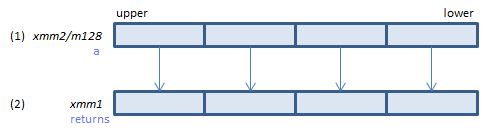
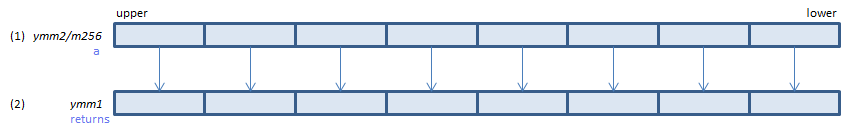

RCPPS - ReCiProcal Packed Single
RCPPS xmm1, xmm2/m128 (S1
__m128 _mm_rcp_ps(__m128 a)
VRCPPS xmm1, xmm2/m128 (V1
__m128 _mm_rcp_ps(__m128 a)

For each float, calculate approximate reciprocal of (1) and set the result to (2). (relative error <= 1.5*2-12)
VRCPPS ymm1, ymm2/m256 (V1
__m256 _mm256_rcp_ps(__m256 a)

For each float, calculate approximate reciprocal of (1) and set the result to (2). (relative error <= 1.5*2-12)
512-bit → VRCP14PS / VRCP28PS
x86/x64 SIMD Instruction List
Feedback